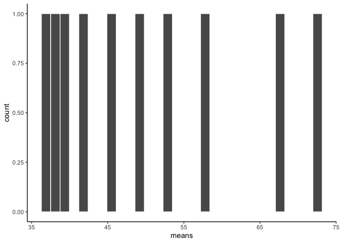
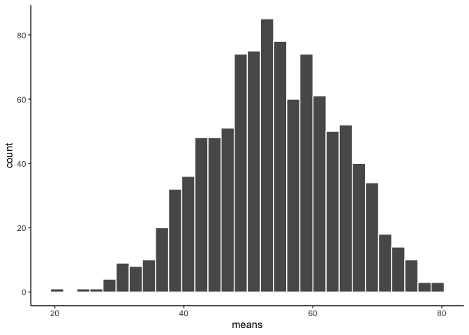

Statistical Inference
GEO 200CN - Quantitative Geography
Professor Noli Brazil
April 11, 2022
In this guide, we’ll demonstrate the concepts we learned in this week’s lecture and handout on statistical inference with real data. This will help ground the theorems, abstract equations and images of red balls from lecture. The objectives of the guide are as follows
- Learn about estimating population parameters using sampling statistics
- Understand the implications of the Central Limit Theorem using real data
- Learn about uncertainty and confidence intervals
Installing and loading packages
We’ll be working with one new package in this lab, infer. Install the package if you have not already done so.
install.packages("infer")Next, we need to load this package as well as our new best friend tidyverse.
library(infer)
library(tidyverse)Population
Our goal is to estimate the average age of a population from a sample. I uploaded onto GitHub a csv file containing the ages of a population of 1,000 residents. The data are also located on Canvas in the Lab and Assignments Week 3 folder. Let’s bring the population into R.
data <- read_csv("https://raw.githubusercontent.com/geo200cn/data/master/ages.csv")The object data contains the population. Because we have a Census, we know the true population parameters. So, we know the population mean
mean(data$age)## [1] 54.004and population standard deviation
sd(data$age)## [1] 17.41066Let’s say we don’t know the ages of every person in the population. Let’s also say we don’t have the resources to conduct a Census. So, we turn to sampling.
Question 1: Create a histogram of age. Does it look normal? Does it matter when you are trying to make inferences about the population mean using a sample?
Sample
We take a sample of size 3 from the population. We can do it the base R way by using sample()
set.seed(1234)
sample_ageb <- sample(data$age, 3, replace=TRUE)Or we can go the tidy R route using sample_n()
#compare sample_n with sample_frac. what's the difference?
sample_aget <- sample_n(data, 3, replace = TRUE)A note about sampling in R: When you work with using random values, the results will be different each time you run some code (that is the point); but sometimes it is desirable to recreate exactly the same random sequence. The function set.seed() allows you to do that (after all, in computers we can only create pseudo-random values). So, by plugging in set.seed(1234) before we ran the sampling functions above, we can replicate the results at a later time.
Mean age of the sample
mean(sample_aget$age)## [1] 66Standard deviation of age of the sample
sd(sample_aget$age)## [1] 8.544004But this is only for one sample. We can randomly sample 3 people 10 times. We can do this using the replicate() function.
sim_results_repl <-replicate(10, sample(data$age, 3, replace=TRUE))Or we can use the tidy friendly function rep_sample_n(), which is a part of the infer package we installed earlier.
sim_results_repl10 <-rep_sample_n(data, 3, replace = TRUE, reps = 10)What does the histogram of each of these size 3 samples look like? Use ggplot() which we learned about in the exploratory data analysis lab.
ggplot(sim_results_repl10, aes(x=age))+
geom_histogram(color="white")+
facet_wrap(~replicate)+
theme_classic()
The function facet_wrap() allows us to create a histogram for each replicate or sample.
Notice, all of the samples do not have the same looking histogram. This is because of random sampling error. All of the samples are coming from the same distribution, but random chance makes each sample a little bit different.
Now let’s look at the mean of the samples.
sample_means <- sim_results_repl10 %>%
group_by(replicate) %>%
summarise(means=mean(age))
sample_means## # A tibble: 10 × 2
## replicate means
## <int> <dbl>
## 1 1 49
## 2 2 45
## 3 3 67.7
## 4 4 73
## 5 5 52.7
## 6 6 37.3
## 7 7 42.3
## 8 8 58.3
## 9 9 39
## 10 10 37.7A histogram gives a visual depiction of the distribution
ggplot(sample_means, aes(x=means))+
geom_histogram(color="white")+
theme_classic()
This is the distribution of the sample means, also known as the sampling distribution. It doesn’t look like much. That’s because we only took 10 samples.
Central Limit Theorem
The histogram of 10 sample means looks kind of lonely. Let’s give them some more friends. How about we repeat our sample of 3 one thousand times instead of just 10?
#sample of 3 one thousand times
sim_results_repl1000 <-rep_sample_n(data, 3, replace = TRUE, reps = 1000)
#sample means
sample_means1000 <- sim_results_repl1000 %>%
group_by(replicate) %>%
summarise(means=mean(age))
#plot of 1,000 sample means
ggplot(sample_means1000, aes(x=means))+
geom_histogram(color="white")+
theme_classic()
Does it look normally distributed?
Question 2: Obtain sample sizes of 200 one thousand times and show a histogram of the 1,000 means. According to CLT, what happens to the histogram, mean and standard deviation of the sample means when you increase n (the sample size)? Does your histogram show this?
Confidence Intervals
The CLT is cool. And its coolness gives us the ability to map our estimate from a single sample onto a normal distribution in order to measure the uncertainty of an estimate. Return for a moment to the question that first motivated this lab: based on a sample, what can we infer about the population? Based only on a single sample, the best estimate of the mean age would be the sample mean. That serves as a good point estimate but it would be useful to also communicate how uncertain we are of that estimate. This can be captured by using a confidence interval.
We can calculate a 95% confidence interval for a sample mean by adding and subtracting 1.96 standard errors to the point estimate
Let’s take a sample of size 200.
sample_age200 <- sample_n(data, 200, replace = TRUE)Question 3: Calculate the lower and upper boundary of the confidence interval. Interpret the values.
Question 4: Let’s say you constructed the confidence intervals for all 1,000 samples of size 200 (You don’t have to do this in R to answer this question). What proportion of these intervals would you expect to capture the true population mean?

This work is licensed under a Creative Commons Attribution-NonCommercial 4.0 International License.
Website created and maintained by Noli Brazil